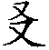

●佛恩之广大周遍而无有穷尽也。譬如果日，为照世故，出没无住。亦如船师，为渡人故，往来不停。我等纵使粉身碎骨、肝胆破碎、以至献出生命，佛恩永劫难报！
甚矣佛恩之广大周遍而无有穷尽也。何以言之，以一切众生，皆有佛性，皆可作佛。但以迷而未悟，遂致反以佛性功德之力，妄于六尘境中，起贪嗔痴，造杀盗淫，由惑造业，由业受报，久经长劫，轮回六道，了无出期。佛于往劫，知此事已，即发大愿，欲令尽虚空遍法界一切众生，同悟本具佛性，同出生死轮回，同成无上觉道，同入无余涅槃。从兹普为法界众生，久经长劫，行菩萨道，但有利益，无不兴崇，六度齐修，一法不著，难行能行，难忍能忍。其行施也，国城妻子，头目髓脑，悉无吝惜。故《法华经》云：“我见释迦如来，于无量劫，难行苦行，积功累德，求菩提道，未曾止息，观三千大千世界，乃至无有如芥子许 ⑴ ，非是菩萨舍身命处，为众生故，然后乃得成菩提道。”只此布施一行，尚非劫寿能宣，况其余之持戒、忍辱、精进、禅定、智慧，以及四摄、万行乎哉！及至惑业净尽，福慧圆满，彻证自心，成无上道，普为众生，说所证法，直欲同皆得己所得。但以上根者少，中下者多，故复随机施教，令其随分得益耳。及其一期事毕，即入涅槃，犹复不舍大悲，于他方世界，示成正觉，以行济度。如是示生此界他方，固非算数譬喻之所能及。譬如果日 ⑵ ，为照世故，出没无住。亦如船师，为渡人故，往来不停。（《新编全本印光法师文钞》卷五第1001页 佛遗教经解刊布流通序）
●儒以诚为本，佛以觉为宗。儒佛之本体，固无二致。儒佛之工夫，浅而论之，亦颇相同，深而论之，则天地悬殊。世人不知其同而不同，不同而同之所以然，故致纷纷诤论，各护门庭，各失佛菩萨圣人治世度人之本心也，哀哉。
儒佛之本体，固无二致。儒佛之工夫，浅而论之，亦颇相同，深而论之，则天地悬殊。何以言之，儒以诚为本，佛以觉为宗。诚即明德，由诚起明，因明致诚，则诚明合一，即明明德。觉有本觉，始觉，由本觉而起始觉，由始觉以证本觉，始本合一，则成佛。本觉即诚，始觉即明，如此说去，儒佛了无二致。阁下所谓学孔学佛，理不外《大学》一章者，乃决定无疑之语，此浅而论之也。至于发挥其修证工夫浅深次第，则本虽同，而所证所到，大有不同也。儒者能明明德，为能如佛之三惑圆断、二严悉备乎？为如证法身菩萨之分破无明，分见佛性乎？为如声闻缘觉之断尽见思二惑乎？三者唯声闻断见思最为卑下，然已得六通自在。故紫柏云，若能直下忘情，山壁由之直度。初果尚七生天上，七反人间，而其道力，任运不犯杀戒，故凡所至处，虫自离开，所谓初果耕地，虫离四寸，况二三四果乎。儒教中学者且置，即以圣人言之，其圣人固多大权示现，则本且勿论。若据迹说，恐未能与见思净尽者比，况破无明证法性之四十一位法身大士乎。即谓明其明德，堪与破无明者比肩，然破无明者，有四十一位，为与最初之初住比肩耶，为与最后之等觉比肩耶？即与最后之等觉比肩，尚于明德未明至乎其极，直待再破一分无明，方可谓为诚明合一，始本无二耳。吾故曰，体同而发挥工夫证到不同也。世人闻同，即谓儒教全摄佛教。闻异，即谓佛教全非儒教。不知其同而不同，不同而同之所以然。故致纷纷诤论，各护门庭，各失佛菩萨圣人治世度人之本心也，可不哀哉。（《新编全本印光法师文钞》卷三第558页 复汤昌宏居士书）
●梦东云：“善谈心性者，必不弃离于因果。而深信因果者，终必大明乎心性。”此理势所必然也。末法众生，根机陋劣，唯有仗佛力之净土法门，亦可永出轮回。此不可思议之最上乘法，宜理事并谈，诫劝齐施。
世出世间之理，不出心性二字。世出世间之事，不出因果二字。众生沉九界，如来证一乘，于心性毫无增減。其所以升沉迥异，苦乐悬殊者，由因地之修德不一，致果地之受用各别耳。阐扬佛法，大非易事。唯谈理性，则中下不能受益。专说因果，则上士每厌闻熏。然因果心性，离之则两伤，合之则双美。故梦东云：“善谈心性者，必不弃离于因果。而深信因果者，终必大明乎心性。”此理势所必然也。而末法众生，根机陋劣。禅教诸法，唯仗自力，契悟尚难，何况了脱。唯有仗佛力之净土法门，但具真信切愿，纵五逆十恶，亦可永出轮回，高预海会。此不可思议之最上乘法，宜理事并谈，诫劝齐施。（《新编全本印光法师文钞》卷一第25页 与佛学报馆书（节录））
●执理废事者，拨无因果。如以画饼充饥，陵空作屋。自误误人，罪岂有极。以善因而招恶果，三世诸佛，名为可怜悯者。
知之匪艰，行之维艰。世有一班掠虚汉，闻得心佛众生三无差别之理，或由阅教参宗，悟及此理，遂谓我与佛同，而了无所用其若修若证。遂放心恣意于一切境缘之中，误谓六尘即觉，贪嗔痴即戒定慧，何须制心摄身，无绳自缚。此种见解，最为下劣。谓之执理废事，拨无因果。如以画饼充饥，陵空作屋。自误误人，罪岂有极。以善因而招恶果，三世诸佛，名为可怜悯者。（《新编全本印光法师文钞》卷二第246页 复永嘉某居士书八）
●真谛则一法不立，所谓实际理地，不受一尘也。俗谛则无法不备，所谓佛事门中，不舍一法也。须知真俗同体，并非二物。
克论佛法大体，不出真俗二谛。真谛则一法不立，所谓实际理地，不受一尘也。俗谛则无法不备，所谓佛事门中，不舍一法也。教则真俗并阐，而多就俗说。宗则即俗说真，而扫除俗相。须知真俗同体，并非二物。譬如大圆宝镜，虚明洞彻，了无一物。然虽了无一物，又复胡来则胡现，汉来则汉现，森罗万象俱来则俱现。虽复群相俱现，仍然了无一物。虽复了无一物，不妨群相俱现。宗则就彼群相俱现处，专说了无一物。教则就彼了无一物处，详谈群相俱现。是宗则于事修而明理性，不弃事修。教则于理性而论事修，还归理性。正所谓称性起修，全修在性，不变随缘，随缘不变，事理两得，宗教不二矣。（《新编全本印光法师文钞》卷四第664页 宗教不宜混滥论）
●真无生忍，实非小可，乃破无明证法性，最下者为圆教初住菩萨，即别教之初地也，谈何容易。
所言念佛三昧，说之似易，得之实难。但当摄心切念，久当自得。即不能得，以真信切愿摄心净念之功德，当必稳得蒙佛接引，带业往生。事一心，若约蕅益大师所判，尚非现世修行人之身分，况理一心乎。以断见思惑，方名事一，破无明证法性，则名理一。若是内秘菩萨行，外现作凡夫，则此之二一，固皆无难。若实系具缚凡夫，则事一尚不多得，况理一乎。当过细看（印光）与永嘉某居士之极长一信，则可知。至于悟无生以后，护持保任 ⑴ ，销熔余习 ⑵ ，彼自了明，何须预问，如人饮水，冷暖自知。否则纵令饮者说得十分的确，而未饮之人，究不知其是何滋味。以居士将此悟无生忍，看得容易，恐自己或悟而不知保任护持，致余习复蒙，得而复失，故有此问。真无生忍，实非小可，乃破无明证法性，最下者为圆教初住菩萨，即别教之初地也，谈何容易。（《新编全本印光法师文钞》卷二第363页 复袁福球居士书）
●悟则大心凡夫，能与佛同。证则初地不知二地举足下足之处。识此悟证之义，自然不起上慢，不生退屈。而求生净土之心，万牛亦难挽回矣。
悟者，了了分明，如开门见山，拨云见月。又如明眼之人，亲见归路。亦如久贫之士，忽开宝藏。证者如就路还家，息步安坐。亦如持此藏宝，随意受用。悟则大心凡夫，能与佛同。证则初地不知二地举足下足之处。识此悟证之义，自然不起上慢，不生退屈，而求生净土之心，万牛亦难挽回矣。（《新编全本印光法师文钞》卷一第183页 复永嘉某居士书五）
●念佛阅经，悟二空理，证实相法，得大彻大悟，非博地凡夫之所能为。蕅益大师示居名字，智者示居五品，南岳示居十信。虽三大师之本地，皆不可测，而其所示名字、观行、相似三位，可见实相之不易证。汝自忖度，果能越此三师否乎？若不能，不如老实念佛，培植善根，往生西方之后，常侍弥陀，高预海会，随其功行浅深，迟早必证实相。则是决定无疑之词。
念佛阅经，悟二空理，证实相法，乃约省悟修持，示现因后果。且勿笼统自任，谓现生便能如是。现生证实相者，非无其人，恐贤契无此善根。若不详陈其故，或致妄期圣证，则志高而行不逮，久而久之，必致丧心病狂，未得谓得，未证谓证，求升反坠，弄巧成拙。究其结果，难免永沦恶趣，不但埋没己灵，实为孤负佛恩。二空理唯言悟，则利根凡夫即能。如圆教名字位中人，虽五住烦恼，毫未伏断，而所悟与佛无二无别。（五住者，见惑为一住，思惑为三住，此二住于界内，尘沙惑无明惑共为一住，此二住于界外，）若约宗说，则名大彻大悟。若约教说，则名大开圆解。大彻大悟，与大开圆解，不是依稀仿佛明了而已。如庞居士闻马祖待汝一口吸尽西江水，即向汝道，当下顿亡玄解。大慧杲闻圆悟薰风自南来，殿阁生微凉，亦然。智者诵法华，至《药王本事品》，是真精进，是名真法供养如来。豁然大悟，寂尔入定，亲见灵山一会，俨然未散。能如是悟，方可名大彻大悟，大开圆解。若云证实相法，则非博地凡夫之所能为。南岳思大禅师，智者之得法师也，有大智慧，有大神通。临终有人问其所证，乃曰，我初志期铜轮。（即十住位，破无明，证实相，初入实报，分证寂光。初住即能于百三千大千世界，示作佛身，教化众生，二住则千，三住则万，位位增数十倍，岂小可哉，）但以领众太早，只证铁轮而已。（铁轮，即第十信位，初信断见惑，七信断思惑，八九十信破尘沙，伏无明。南岳思示居第十信，尚未证实相法。若破一品无明，即证初住位，方可云证实相法耳。）智者大师，释迦之化身也。临终有问未审大师证入何位，答日，我不领众，必净六根。（即十信位，获六根清净，如法华经法师功德品所明。）损己利人，但登五品。（五品，即观行位，圆伏五住烦恼，而见惑尚未断除。）蕅益大师临终有偈云：“名字位中真佛眼，未知毕竟付何人。”（名字位人，圆悟藏性，与佛同俦，而见思尚未能伏，何况乎断。末世大彻大悟人，多多是此等身分。五祖戒为东坡，草堂清作鲁公，犹其上者。次则海印信为朱防御女，又次则雁荡僧为秦氏子桧。良以理虽顿悟，惑未伏除，一经受生，或致迷失耳。藏性，即如来藏妙真如性，乃实相之异名。）蕅益大师示居名字，智者示居五品，南岳示居十信。虽三大师之本地，皆不可测，而其所示名字、观行、相似三位，可见实相之不易证，后进之难超越。实恐后人未证谓证，故以身说法，令其自知惭愧，不敢妄拟故耳。三大师末后示位之恩，粉骨碎身，莫之能报。汝自忖度，果能越此三师否乎？若曰念佛阅经，培植善根，往生西方之后，常侍弥陀，高预海会，随其功行浅深，迟早必证实相，则是决定无疑之词，而一切往生者之所同得而共证也。（《新编全本印光法师文钞》卷一第170页 复永嘉某居士书五）
●学固宜学，断断不可起优劣胜负之念，则利益自不可思议矣。持咒以不知义理，但只至诚恳切持去，竭诚之极，自能业消智朗，障尽福崇。其利益有非思议所能及者。
《往生咒》梵文，学之亦甚好。但不得生分别心，谓此略文为非。一起此念，则一大藏所有咒，皆生疑心，谓为未合佛意。须知译经之人，皆非聊尔，何可以他译不同，便藐视之乎？千余年持之得利益者，何可胜数。岂千余年来之人，皆不知梵文乎？学固宜学，断断不可起优劣胜负之念，则利益自不可思议矣。又持咒一法，与看话头相似。看话头以无义路，故能息分别之凡情，证本具之真智。持咒以不知义理，但只至诚恳切持去，竭诚之极，自能业消智朗，障尽福崇。其利益有非思议所能及者。（《新编全本印光法师文钞》卷三第450页 复张云雷居士书二）
●古人谓出家乃大丈夫之事，非将相所能为，乃真语实语，非抑将相而扬僧伽也。良以荷佛家业，续佛慧命，非破无明以复本性，宏法道以利众生者，不能也。
夫佛法者，乃九法界公共之法。无一人不当修，亦无一人不能修。持斋念佛者多，推其效则法道兴隆，风俗淳善。此则唯恐其不多，愈多则愈美也。至于出家为僧，乃如来为住持法道，与流通法道而设。若其立向上志，发大菩提，研究佛法，彻悟自性，宏三学而偏赞净土，即一生以顿脱苦轮，此亦唯恐不多，多多则益善也。若或稍有信心，无大志向，欲藉为僧之名，游手好闲，赖佛偷生，名为佛子，实是髡民 ⑴ 。即令不造恶业，己是法之败种，国之废人。倘或破戒造业，贻辱佛教，纵令生逃国法，决定死堕地狱，于法于己，两无所益。如是则一尚不可，何况众多。古人谓出家乃大丈夫之事，非将相所能为，乃真语实语，非抑将相而扬僧伽也。良以荷佛家业，续佛慧命，非破无明以复本性，宏法道以利众生者不能也。今之为僧者，多皆鄙败无赖之徒。求其悠悠泛泛，持斋念佛者，尚不多得，况能荷家业而续慧命乎？今之佛法，一败涂地者，以清世祖不观时机，仰遵佛制，革前朝之试僧，永免度牒，令其随意出家，为之作俑也。（《新编全本印光法师文钞》卷一第42页 复泰顺谢融脱居士书二）
●师有成我之德者，则属于父；诱掖奖劝，以达其材，则属于兄；丽泽互益，则属于友。孟子谓师也父兄也，故五伦之中，不列其师。
夫人生大伦，其数唯五：谓君臣，父子，兄弟，夫妇，朋友。而父生，师教，君食，三者相等。何五伦之中，不列其师？不知师有成我之德者，则属于父。次则诱掖奖劝 ⑵ ，以达其材，则属于兄。故孟子谓师也父兄也。次则丽泽 ⑶ 互益，如二月互照，二手互援，则属于友。（朋从二月，友从二手，古文友作“ ”，又，手也， 系又之变体，）故佛门每谓寻师访友。（《新编全本印光法师文钞》卷一第161页 复永嘉某居士书五）
●舍利，乃修行人戒定慧力所成，非炼精气神所成。此殆心与道合，心与佛合者之表相耳。舍利也称身骨或灵骨。
言舍利者，系梵语。此云身骨，亦云灵骨。乃修行人戒定慧力所成，非炼精气神所成。此殆心与道合，心与佛合者之表相耳。非特死而烧之，其身肉骨发变为舍利。古有高僧沐浴而得舍利者。又雪岩钦禅师剃头，其发变成一串舍利。又有志心念佛，口中得舍利者。又有人刻《龙舒净土文》板，板中出舍利者。又有绣佛绣经，针下得舍利者。又有死后烧之，舍利无数，门人皆得，有一远游未归，及归致祭像前，感慨悲痛，遂于像前得舍利者。长庆闲禅师焚化之日，天大起风，烟飞三四十里，烟所到处，皆有舍利。遂群收之，得四石余。当知舍利，乃道力所成，丹家不知所以，妄意是精气神之所炼耳。（《新编全本印光法师文钞》卷二第288页 复郦隐叟书）
●凡佛菩萨现身，若示同凡夫，唯以道德教化人，绝不显神通。若显神通，便不能在世间住。唯现作颠狂者，显则无妨，非日修行人皆宜饮酒食肉也。世间善人，尚不饮酒食肉，况为佛弟子，要教化众生，而自己尚不依教奉行，则不但不能令人生信，反令人退失信心。故饮酒食肉不可妄学，妄学则决定要堕地狱。
道济禅师，乃大神通圣人，欲令一切人生正信心，故常显不思议事。其饮酒食肉者，乃遮掩其圣人之德，欲令愚人见其颠狂不法，因之不甚相信，否则彼便不能在世间住矣。凡佛菩萨现身，若示同凡夫，唯以道德教化人，绝不显神通。若显神通，便不能在世间住，唯现作颠狂者，显则无妨，非曰修行人皆宜饮酒食肉也。世间善人，尚不饮酒食肉，况为佛弟子，要教化众生，而自己尚不依教奉行，则不但不能令人生信，反令人退失信心，故饮酒食肉不可学。彼吃了死的，会吐出活的。你吃了死的，尚不能吐出原样的肉，何可学彼吃肉。彼喝了酒，能替佛装金，能将无数大木，从井里运来。汝喝了酒，把井水也运不出来，何可学他。《济公传》有几种，唯《醉菩提》最好。近有流通者，云有八本，多后人敷衍之文。《醉菩提》之若文若义均好，所叙之事，乃当日实事。世人不知所以然，不是妄学，便是妄毁。妄学则决定要堕地狱，妄毁则是以凡夫知见，测度神通圣人，亦属罪过，比之学者，尚轻之多多矣。见其不可思议处，当生敬信，见其饮酒食肉处，绝不肯学，则得益不受损矣。（《新编全本印光法师文钞》卷二第357页 复庞契贞书）
●多是灵鬼假冒仙佛神圣。念佛人切勿为乩教所迷。
扶乩多是灵鬼假冒仙佛神圣。鬼之劣者，或无此通力，其优者则能知人心，故能借人之聪明智识而为之。纪文达 ⑴ 谓“乩多灵鬼假托，余与兄坦然扶乩，余能诗而不能书，余扶则诗词敏捷，书法潦草，坦然扶则诗词庸常，书法遒劲。”所冒古人，问及集中奥窍，则云年代久远，不复记忆，故知非真。然此鬼之灵，但能于人现知之心，借而为用。于识田中有，现知中无者，或此义非己所知者，便不能引以示人。其去业尽情空之他心通，实有天渊之远，但其气分似之。又恐汝等或为乩教所迷，故不得不引及而并言之。（《新编全本印光法师文钞》卷一第157页 复永嘉某居士书四）
●神祇乃业报所感，可云职司。地藏菩萨，以弘誓大愿，在幽冥度脱众生，何可云职司乎？不知佛法，纵判也不能了知。已知佛法，用不著判。
问，地藏王菩萨，为奉行佛法之人，在阴曹职司幽冥教主，系入六道度众生者。然常人每误为神祇，或灵鬼者，诸如此类，不一而足，然则奉行佛法的菩萨，与天仙鬼神，将何由判别耶？
答，神祇乃业报所感，可云职司。地藏菩萨，以弘誓大愿，在幽冥度脱众生，何可云职司乎？世人不识凡圣，一概视作神鬼，亦无怪其然。譬如小儿，只识其家之人，余一切人，彼皆完全不知，当谓一切人，皆不如彼父母之尊贵矣。既知断惑证真，了生脱死者，方为小乘圣人。破无明，证法性者，方可谓之大乘菩萨。而未断烦恼，仗宿福力，得为神祇，尚与天人地位相去悬远，况已证法身之大菩萨乎？不知佛法，纵判也不能了知。已知佛法，用不著判。（《新编全本印光法师文钞》卷二十二第1943页 答崔树萍居士问）
●世人常以饮食香华等表其感佛菩萨之诚心，则功德无量。然而不知求生西方，用许多金钱，买锡箔烧之供佛菩萨，实则痴心妄想。更有愚痴无知之人以自私自利之心，欲作永远做鬼之计，则更是可悲可怜！
光昔看《法苑珠林》，忘其在某卷，有二三页说锡箔（此即金银）及焚化衣物（此即布帛）等事。其文乃唐中书令岑文本，记其师与一鬼官相问答等事。其人仿佛是睦仁茜，初不信佛及与鬼神，后由与此鬼官相契，遂相信，并令岑文本为之设食，遍供彼及诸随从。睦问冥间与阳间，何物可相通，彼云金银布帛可通，然真者不如假者。即令以锡箔贴于纸上，及以纸作绸缎等，便可作金及衣服用。此十余年前看者，今不记其在何卷何篇。汝倘详看，当可见之。其时在隋之初，以此时岑文本尚在读书，至唐则为中书令矣。汝之性情，过于自是。古农所说，虽未知其出处，然于天理人情，颇相符合。汝尚不以为然，便欲全国之人废除此事。倘真提倡，或受鬼击。世有愚人，不知以物表心，专以多烧为事，亦不可。当以法力、心力加持，令其变少成多，以遍施自己宗亲与一切孤魂则可，若供佛菩萨，则非所宜。佛菩萨岂无所受用，尚需世人之供养乎？但世人若不以饮食香华等表其诚心，则将无以作感佛菩萨之诚。愚人无知，纵用此以供佛，于一念诚心上论，亦有功德。喻如小儿供佛以沙（阿育王前身事），尚得铁轮王报。若愚人不知求生西方，用许多金钱，买锡箔烧之寄库，实则痴心妄想。俗人以自私自利之心，欲作永远做鬼之计，恰逢不问是非，只期有佛事得经资之俗僧，便随彼意行之。故破地狱，破血湖，还寿生者，实繁有徒。（《新编全本印光法师文钞》卷十七第908页 复金振卿居士书）
●死之已后，尚未受生于六道之中，名为中阴。中阴者，即识神也，俗所谓灵魂者。中阴受生，疾则一弹指顷，即向三途六道中去，迟则或至七七并过七七日等。三界诸法，唯心所现。众生虽迷，其业力不思议处，正是心力不思议处，亦是诸佛神通道力不思议处。
中阴 ⑴ 者，即识神也。非识神化为中阴，即俗所谓灵魂者。言中阴七日一死生，七七日必投生等，不可泥执。中阴之死生，乃即彼无明心中，所现之生灭相而言，不可呆作世人之死生相以论也。中阴受生，疾则一弹指顷，即向三途六道中去，迟则或至七七并过七七日等。初死之人，能令相识者，或见于昼夜，与人相接，或有言论。此不独中阴为然，即已受生善恶道中，亦能于相识亲故之前，一为现形。此虽本人意念所现，其权实操于主造化之神祇，欲以彰示人死神明不灭，及善恶果报不虚耳。否则阳间人不知阴间事，则人死形既朽灭，神亦飘散之瞽论，必至群相附和。而举世之人，同陷于无因无果，无有来生后世之邪见深坑，将见善者则亦不加惕厉 ⑵ 以修德，恶者便欲穷凶极欲以造恶矣。虽有佛言，无由证明，谁肯信受。由其有现形相示等，足征佛语无妄，果报分明。不但善者益趋于善，即恶者其心亦被此等情理折伏，而亦不至十分决烈。天地鬼神，欲人明知此事，故有亡者现身于人世，阳人主刑于幽冥等。皆所以辅弼佛法，翼赞 ⑶ 治道。其理甚微，其关系甚大。此种事古今载籍甚多，然皆未明言其权之所自，并其事之关系之利益耳。中阴虽离身躯，依旧仍有身躯之情见在。既有身躯之情见，固须衣食而为资养，以凡夫业障深重，不知五蕴本空，仍与世人无异。若是具大智慧人，则当下脱体无依，五蕴空而诸苦消灭，一真显而万德圆彰矣。其境界虽不必定同，不妨各随各人之情见为资具。如焚冥衣，在生者只取其与衣之心，其大小长短，岂能恰恰合宜。然承生人之情见，并彼亡人之情见，便适相为宜。此可见一切诸法，随心转变之大义矣。死之已后，尚未受生于六道之中，名为中阴，若已受生于六道中，则不名中阴。其附人说苦乐事者，皆其神识作用耳。投生必由神识与父母精血和合，是受胎时，即已神识住于胎中。生时每有亲见其人之入母室者，乃系有父母交媾时，代为受胎。迨其胎成，本识方来，代识随去也。《欲海回狂》，卷三第十二页，第八、九、十、十一、十二行，曾有此问。原答颇不中理，光为之改正，当查阅之。原答云，譬如鸡卵，有有雄者，有无雄者。未有识托之胎，如卵之无雄者也。不知卵之无雄者，即令鸡孵，亦不生子，何可为喻？光只期理明，不避僭越？故为居士陈其所以。圆泽之母怀孕三年，殆即此种情事耳。此约常途通论。须知众生业力不可思议。如净业已成者，身未亡而神现净土。恶业深重者，人卧病而神婴罚于幽冥。命虽未尽，识已投生，迨至将生，方始全分心神附彼胎体。此理固亦非全无也。当以有代为受胎者，为常途多分耳。三界诸法，唯心所现。众生虽迷，其业力不思议处，正是心力不思议处，亦是诸佛神通道力不思议处。光近十余年，目力不堪为用，故于经论不能广引以证，然其理固非妄出臆见，以取罪戾 ⑴ 也。（《新编全本印光法师文钞》卷二第304页 复范古农居士书二）
●不必究其为何人所作，只取其益世道人心为事。
《感应篇》通行本，有太上二字，谓为老子所作，亦有谓本《抱朴子》而广之。然不必究其为何人所作，只取其书所说之益，所谓不以人废言也。圣人立法，固不必定取圣人所说为法，只取其益世道人心为事。虫文鸟书，大开文字之端，敢以虫鸟不足重，而不用其文字乎？举此一事，可以息彼妄论是非者之无益繁词。此种繁词，尚不如春禽昼啼、秋虫夜鸣之有天然风味也。（《新编全本印光法师文钞》卷二十二第1944页 答崔树萍居士问）
●居心则若贤若愚，通皆恭敬，不生傲慢。行事则亲贤远愚，取优去劣。如是则可免相染之弊，及挂误之愆。天下事，有一定之理，无一定之法。若不以情事而为定夺，如执死方子医变症，则生者少而死者多矣。
来书发明普敬僧尼，此理此事，实为至当。然教儿辈，又须反复为论。若止一往，则或恐不知去取亲疏，或致受损。譬如有人，若诗若文，若宗若教，皆悉高超，而其品行卑劣，不堪为人榜样。倘不加分别，概行亲近，此人亲之，不但行为或随彼转，而其任己臆见，妄说道理处，无真知见，或被所惑。须必居心则若贤若愚，通皆恭敬，不生傲慢。行事则亲贤远愚，取优去劣。如是则可免相染之弊，及挂误之愆。天下事，有一定之理，无一定之法。若不以情事而为定夺，如执死方子医变症，则生者少而死者多矣。必使情与理相合，法与事相契，则得之矣。（（《新编全本印光法师文钞》卷二第391页 复永嘉某居士书八）
●以言劝谕，于佛前代为忏悔，祈其加被令其回心转意也。
彼等不能如法，一须以言劝谕，二须于佛前代为忏悔，祈其加被令其回心转意也。当以平心和气说世间富贵人逸乐致苦，贫穷人勤俭致富等事，当作闲话说，久久或可以动心。若加以严厉声色，则便成抵抗矣，不唯无益，且致更甚。……但用劝喻祈祷二法而已。（《佛光社刊》第四期《印光法师与念佛居士书二》）
又上海黄涵之居士之母，不能食素，且不信食素为学佛要事。黄涵之函询其法，余令其于佛前朝夕代母忏悔业障，以母子天性相关，果能志诚，必有感应。涵之依之而行，月余，其母便吃长素矣。时年八十一，日课佛号二万声，至九十三岁去世。（《新编全本印光法师文钞》卷二十第1571页 上海护国息灾法会法语）
●可向佛代彼忏悔宿业，而以己念佛功德，皆为回向，则或可有生信发愿之日矣。果能生信，修持净业，俾得往生净土，可谓大孝尊亲矣。
令严之不生信，亦理学学说所使。然近年及沪战，由念佛而获种种不可思议之感应事迹者甚多，何不曲为陈述，俾其因兹生信乎？若明知此事，犹不生信，则只可向佛代彼忏悔宿业，而以己念佛功德，皆为回向，则或可有生信发愿之日矣。果能生信，修持净业，俾得往生净土，可谓大孝尊亲矣。（《新编全本印光法师文钞》卷九第399页 复慧龙居士书）
●须以真实诚意为彼宣说所知之因果等事理。不能知者，不可强说。佛所说之净土法门，即三界内一切众生之导师也。众生依佛言教而修行之，决定能到西方极乐世界，本有家乡，享受安乐。但以凡情不解圣智，故又自作聪明，妄相诘难，殊可哀怜。
凡有迷而不信者，必须以真实诚意为彼宣说所知之因果等事理。不能知者，不可强说。众生在迷，如生而盲者，迷本有家，若欲归还，须待人领，方可不致撞墙磕壁，堕坑落堑。彼得人领，当须全体依从领者所说，不得稍生违抗。彼若违抗，不但不能到家，或恐丧失身命。佛所说之净土法门，即三界内一切众生之导师也。众生依佛言教而修行之，决定能到西方极乐世界，本有家乡，享受安乐。但以凡情不解圣智，故又自作聪明，妄相诘难，殊可哀怜。（《新编全本印光法师文钞》卷三第599页 复冯不疚居士书）
●宜设法劝谕，令其勿杀。并于三宝前，代父母忏悔。果真诚挚，自无有不感格者。
佛弟子自既戒杀，何可为人买而送之，而令其杀乎？如其自己尊长所逼，亦宜设法劝谕，令其勿杀，以市现物。何得便谓为无法可设乎？须知人子之道，当预为陈其杀生之祸害，俾亲减除杀业。即不然，亦当恳其勿亲杀，庶不至令亲与己之杀业，结而不可解释也。是宜平时于三宝前，代父母忏悔。果真诚挚，自无有不感格者。（《新编全本印光法师文钞》卷十七第825页 复卓智立居士书三）
●欲得身体庞厚、性情贤善、福慧寿三通皆具足之子，须依我说：房事节制要有度；平日存好心，说好话，行好事，志诚念佛念南无观世音菩萨，尤其临产时要多多念；喂儿奶时，必须心气和平。若生大气，奶则成毒。女子从小就要学柔和谦逊，满腔都是太和元气，生机勃勃。若如此，生子必易、必善、必不死、必不病。
求子之道，人多背驰。汝欲得身体庞厚、性情贤善、福慧寿三通皆具足之子，须依我说，方可遂心。世人无子，多娶妾媵 ⑴ ，常服壮阳之药，常行房事，此乃速死之道，非求子之方也。幸而得子，亦如以秕稻 ⑵ 种之，或不出，或出亦难成熟。第一要断房事，或半年，至少或百日，愈久愈好。当与妇说明，彼此均存此念，另屋居住。若无多屋，决须另床。平时绝不以妻作妻想，当作姊妹想，不敢起一念之邪念。待身养足后，待妇月经净后，须天气清明，日期吉祥，夜一行之，必得受孕。从此永断房事，直到生子过百日后，或可再行。妇受孕后，行一次房，胞厚一次，胎毒重一次。且或因子宫常开，致易堕胎。此种忌讳，人多不知，纵有知者，亦不肯依。故致或不生，或不成，或孱弱短命。不知自己不善用心，反说命不好，反将行房当常事，日日行之，不死就算大幸。又要心存慈善，利人利物。利人利物，不一定要钱，存好心，说好话，行好事。凡无利益之心之话之事，均不存不说不行。满腔都是太和元气，生机勃勃。又须志诚念南无观世音菩萨（就依此念），愈多愈好。早晚礼拜念若干，此外行住坐卧都好念。睡倒虽好念，也要心存恭敬。宜穿衫裤，不可赤体。宜默念，不宜出声。默念若字多难念，可去南无二字，但念观世音菩萨五字。白衣咒，念也好，不念也无碍。汝如是存心行事念，亦令汝妇也如是存心行事念，及至临产还念。临产不可默念，要出声念。旁边照应的人，须大声帮他念。管保了无苦痛难产之事。临产默念不得，以用力送子出，默念或受气病。女人一受孕，不可生气，生大气则堕胎。兼以乖戾之气，过之于子，子之性情，当成凶恶。又喂儿奶时，必须心气和平，若生大气，奶则成毒。重则即死，轻则半日一日死，决无不死者。小气毒小，虽不死，也须生病。以故爱生气之女人的儿女，死的多，病的多。自己喂，雇奶母喂，都是一样。生了大气，万不可喂儿奶，须当下就要放下，令心平气和，过半天再喂。喂时先把奶挤半茶碗倒了，奶头揩过再喂，就无祸殃。若心中还是气烘烘的，就是一天也喂不得。喂则不死，也须大病。此事古今医书均未发明，近以阅历方知其祸。女子从小就要学柔和谦逊，后来生子，必易、必善、必不死、必不病。凡儿女小时死病，多一半是其母生气之故。少一半是自己命该早死。天下古今由毒乳所杀儿女，不知有几恒河沙数，可不哀哉！汝为悦亲，故为汝详说。须劝汝母吃素念佛，求生西方。汝与汝妻，亦各如是。（《新编全本印光法师文钞》卷十六第746页 复张德田居士书一）
●汝果志诚念佛兼念观音求佛菩萨怜悯加被，此是唯一不二之转变妙法。
汝侄之不知努力做人，乃从小失教所致。小时失教，大了便难成器。汝际遇如是，但当仰念汝父母、汝兄之故，勿生烦恼。认真念佛，求佛加被于彼，俾开知识，自可做好人矣。若自己生烦恼，则于彼无益，于汝之身，并教养侄之德，皆有损矣。汝果志诚念佛兼念观音，一心恳求加被于彼，诚之所至，金石为开，彼当渐渐转变为好人，不至长作浪子及废人耳。宜勿分别，作己子不才想，但求佛菩萨怜悯加被，此是唯一不二之转变妙法。（《新编全本印光法师文钞》卷二十第1474页 复崔益荣居士书二）
●爱之以道，令彼诸恶莫作，众善奉行，戒杀护生，信愿念佛，则爱便为净业助行矣。
问，古德云，爱不重不生娑婆，爱之宜除，固是理所必然。乃儿孙之间，利害之际，总不能漠然忘情，将何道以御之？
答，爱儿孙，要爱之以道。令彼诸恶莫作，众善奉行，戒杀护生，信愿念佛，则爱便为净业助行矣。此又御害获利之大根据。（《新编全本印光法师文钞》卷二十二第1952页 答俞大锡居士问）
●光于去秋，始知毒乳杀儿之惨，故开示育儿之妇女，若生大气后，当过一日，待乳之毒性转好再喂。女子从小时即须习以性情柔和，则可无月经不调，及大气致儿死，小气致儿病之患。既性情柔和，则无口舌是非，而家庭和睦矣。祈将此意与一切人说。
世间事要做得无过，均须要尽一番心力。若一不细心，则功少过多矣。光于去秋，始知毒乳杀儿之惨，故于息灾会开示中说育儿之妇女，若生大气后，当过一日，待乳之毒性转好再喂。今春以屡闻人言死者病者之多，因作一毒乳杀儿之广告，云当过三日再喂。其书印出，寄于南京一弟子。彼以此事说与其妻。其妻系西洋人，云“此名火急奶，气平后半日即可喂。须一生气，随即令心平气和，否则怀恨在心，乳难转好矣。喂时须先挤出半茶碗倒了，再令儿吃，即无患。若过三日，奶或发胀痛，反为不美。”故即令改纸板。第二次三万，当无误。又言“月经来时，亦不可生气，一生气月经即止。”以故女子未嫁，亦有月经不调之病。窃谓此事，于家庭教育、国家人民，均有关系。以女子从小时即须教以谦逊柔和，则可无月经不调，及大气致儿死，小气致儿病之患。既性情柔和，则无口舌是非，而家庭和睦矣。祈将此意与一切人说。所有息灾开示毒乳杀儿广告，顶格批明，下之“过三日”字抹杀，则了无后患矣。（《新编全本印光法师文钞》卷二十三第154页 复李德明居士书六）
●人若能发大菩提心，生大惭愧，转众生之损人利己心，行菩萨之普利众生行。则若宿业、若现业，皆被此大菩提心中之佛号光明，为之消灭净尽也。世人多有作恶半生，后乃改悔，因未能全无恶报，遂谓佛法不灵，修持无益，仍愚痴之人。
今之世道，乃患难世道。虽曰念佛能減宿业，然须生大惭愧，生大怖畏，转众生之损人利己心，行菩萨之普利众生行。则若宿业、若现业，皆被此大菩提心中之佛号光明，为之消灭净尽也。若前生及昔日，曾作大业，今虽止恶，未能力修众善，及但泛泛然念佛，则功过不相敌，固难免或罹恶报耳。非念佛之功虚弃也，以未发菩提心，特以恶业广大，不能相掩耳。倘能发大菩提心，则如杲日当空，霜露立消。世人多有作恶半生，后乃改悔，因未能全无恶报，遂谓佛法不灵，修持无益。居士既不以光为外人，光固不得不与居士略陈所以，以期出迷途而登觉岸耳。（《新编全本印光法师文钞》卷十九第1323页 复康寄遥居士书一）
●猛兽、毒蛇、蝗虫，非杀能止之物。唯大家发慈善心，同念佛号，彼必远去。
猛兽、毒蛇、蝗虫之类，均由人心凶恶，故致伤人。若向彼念佛，及教一切人各念佛，彼当自去。……猛兽、毒蛇、蝗虫，非杀能止之物。唯大家发慈善心，同念佛号，彼必远去。汝何不见《普门品》“若恶兽围绕，利牙爪可怖，念彼观音力，疾走无边方。蚖蛇及蝮蝎，气毒烟火然，念彼观音力，寻声自回去”乎？（《新编全本印光法师文钞》卷十四第317页 复章以铨居士书三）
●以至诚心持《大悲咒》，咒净水一百八遍。如不会《大悲咒》，可至诚念南无大慈大悲救苦救难观世音菩萨一万声。然后持此水向橘树洒之，随行随念。其虫纵有，决不至太甚。此乃根本解决法。
接手书，备悉。汝所附问之事，实为贵地沐佛法之渐，以贵地人以橘为出产。倘能以至诚心持《大悲咒》，咒净水一百八遍，然后持此水向橘树洒之，随行随念咒随洒。其虫纵有，决不至太甚。倘极其恭敬至诚，当可不生。如不会《大悲咒》，念《准提咒》，或《往生咒》，或《心经》，皆可。即全不会，但至诚念南无大慈大悲救苦救难观世音菩萨一万声，（预先供净水一碗，念毕向树洒之。）去时随行随念，至树处随行随念随洒。倘肯日日常念，或在树林周围念，其树必定茂盛繁实。世间人不知道，唯知利。果能依此，不生虫，多结果实，则人皆肯念矣。若有虫，则难令不捕，须令其不生，乃根本解决法。生而不捕，断做不到。凡事顺人情则易从，逆人情则不从。汝先作此法，倘真灵，然后以此劝其一乡，则一乡便可通沐佛化。（《新编全本印光法师文钞》卷十七第832页 复卓智立居士书四）
●当于其处，立一木标，上用极厚白洋铁板，刻南无阿弥陀佛六字。字要大，要看得远，要能经久，可息此祸。
然溺 ⑴ 人之处，常有人溺，即所谓求替死鬼者。当于其处，立一木标，上用极厚白洋铁板，刻南无阿弥陀佛六字。字要大，要看得远，要能经久，可息此祸。以刻此字之人之慈心，感佛之慈光加被，以后决保无有此祸。即此可见佛慈悲力，不可思议。（《新编全本印光法师文钞》卷九第258页 复崔德振居士书五）
1．莫讶一称超十地。
须知六字括三乘。
2．如来拯济无方，广度众生须度我。
吾辈竛竮 ⑵ 没寄，不念弥陀更念谁。
3．依宏誓愿，建折摄之法门，但肯一心持名，自尔潜符实相，
俾四圣六凡同证真常，故得九界咸归，十方共赞。
以大慈悲，立厌欣之胜行，若能初土托质，何难顿入寂光，
导三乘五性齐登净域，因兹千经俱阐，万论均宣。
4．应当发愿愿往生，客路溪山，切莫从头再眷恋。
自是不归归便得，故乡风月，直须全体总亲承。
5．成就六八大愿，居西方以作佛，
举华藏世界诸庄严，圆彰净土。
愍念九品含灵，向东域而垂慈，
引娑婆国中众男女，同往莲邦。
6．舍西归捷径，九界有情，上何以圆成觉道。
离净土法门，十方诸佛，下不能普利群萌。
7．五住二执，蒙光顿圆夫四德。
三乘六道，克念定证于一真。
8．佛愿宏深，十方共赞。
生心恳到，九界同归。
9．寿量无边，竖穷三际。
光明有象，横遍十方。
10．苦海无边，回头是岸。
乐邦有路，起信即生。
11．唯期五浊顿空，任他香无人焚，地无人扫。
倘得一真共证，自尔愿令我满，心令我安。
12．济度无方，怜伊体一。
津梁罔测，悯彼迷深。
13．誓愿宏深，十方共赞。
慈悲广大，九界同归。
1．何必问是谁，此道于今昭日月。
但能常系念，佛心无处不慈悲。
2．决志求生，效昔贤将错就错。
一心忆念，至今日人云亦云。
3．因戒生定，定慧圆明菩提本。
由教入净，净禅贯彻觉道成。
4．力修戒定慧空，则无我见。
常念慈悲喜拾，方契佛心。
5．了君大事唯修净，
畅佛本怀在往生。
6．三业相应，往生有分。
六根都摄，见佛无难。
7．照见五蕴皆空，远离颠倒梦想。
都摄六根净念，上合本妙觉心。
8．五蕴皆空，六根俱寂。
一尘不染，万德圆彰。
净土一法，乃十方三世一切诸佛，上成佛道，下化众生，成始成终之总持法门。多有欲作千古第一高人者，藐视而毁谤之。吾人当以诸佛诸祖为师，不当以此种高人为据，则可即生蒙佛慈力，往生西方。（《新编全本印光法师文钞》卷十第431页 复济善大师书）
今之欲亲近善知识者，须先知禅净之所以。否则，十有八九，由善知识破坏净土善根，尚自嚣嚣得意，谓得正法，良可痛叹。（《新编全本印光法师文钞》卷九第279页 复郑慧洪居士书）